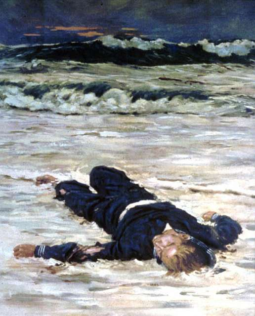

Poems
The Fate of the Seafarer's Son

Fine mist that crown his greying head as wrapped in shred of sail he goes, by drying trail that salt his stead from harbour's yawn at evening's close -- For at the last, his soul o'erturned has sojourned home by dwindling fleet; let darkness blot the sturdy earth that moveth not beneath his feet -- let hallowed and unmoving ground appease the wanderer within that slavering, frets against the cage to part him ever from his kin. The wearied path by night unchanged, the threat of rain a threat uncared -- for there, where he had left it last, in palimpsest, the farmhouse stands. A mirrored pond before it lies, to troubled seas -- a lullaby; the calm that rounds, unbroken sheathed the ring of stones around it wreathed. Along the westward fold of hill, the river's turn no dam can tame; from which the sailor's son did steal the fated stones his pond to frame. Jealous river, jealous god! Its eye did fall upon the pond -- tame enchantment, full adorned; each stolen stone a river scorned -- Beneath the current's listless throes where sabled sunlight drowning goes, an ancient discontent he woke that deep its fest'ring curses spoke. Scarlet fever, flew the whisper from mouth to ear, in town of late; no missive to no port forewarned the sailor of his young son's fate -- and thus did still his heart's ascent as thro' the oaken door he passed; the wanderer stilled as he beheld his fair young wife and son at last. As understanding flooded nigh to cut the stem of joy, the knife of sickness strummed the trancing air and felled the hope that lingered there. By bedside knelt on folded knee, the tossing restless hand took he; his child, besieged by fevered warmth, awoke; and trembling words came forth: Dearest father, how I knew you'd hear me calling out to you; each day prayed I that you would come and sail home ere the setting sun. Oh, father -- tell of what you've seen Of faeries' gold and dragons green Tell some tale of distant lands Of sugar-winds and desert sands. Before I close my eyes to sleep, tell some memory you keep that in your heart most treasured gleams of all the sights you've ever seen. Where his young wife in shadow stood the stifled cry escaped her breast; the mariner did grasp her hand and thro' his silent tears professed: Aye, the rubied desert glows Beyond horizons never known by starring strands of arctic light that thread the swift embroider'd night. But child, of wonders I've beheld uncounted treasures to mine eyes there is but one beyond compare for which the strongest man might die -- no battle where the mighty fall No gloried fleet of victory's call No earthly sight e'er lend such grace My child, as memory of thy face.
Kataryna Zharkovna is a poet born in Serbia, grown in Canada, honed in Siberia. Her work can be found or forthcoming in magazines such as Sundial, Discretionary Love, Neologism, Eternal Haunted Summer, Mindfork and others. When not writing, she spends time befriending swans, painting botanical diagrams and taking care of two charming elven children.